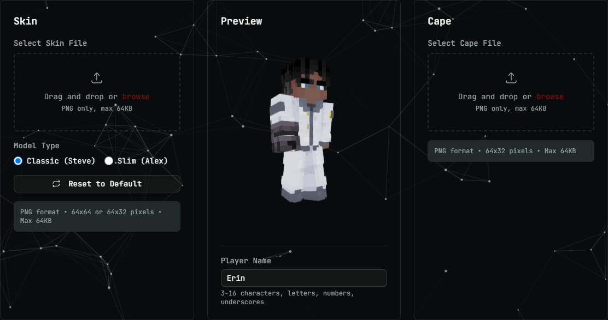

Ven a jugar.
Descubre otras formas de compartir una partida. Explora mundos, conoce personas y encuentra una comunidad a la que quieras volver.
CURIOSIDADKintare es una comunidad para crear experiencias y conexiones. Construimos una plataforma de juego para que lo que imaginas tenga un lugar, y alguien con quien compartirlo.
Conoce KintarePara quienes juegan.
Para quienes crean.
Para quienes se quedan.
El mundo que construyeron. La partida que se alargó. Esa persona que llegó por un juego y terminó siendo parte de tu vida.
Kintare nace de esa forma de entender el juego. Queremos dar a jugadores, creadores y comunidades una base común para encontrarse, expresarse y hacer cosas juntos.
Desde Puebla, México, desarrollamos la tecnología que sostiene esas experiencias: cuentas, perfiles, mundos compartidos y herramientas para las personas que los cuidan.
Tres preguntas para encontrar lo que más te interesa de Kintare. Puedes cambiar de camino cuando quieras.
Una base compartida para jugar, crear y organizar una comunidad. Explora lo que estamos construyendo.
Tu cuenta es el punto de partida. Identidad de jugador, perfiles y personalización, con herramientas para controlar cómo accedes a Kintare.
Desarrollamos servicios para organizar servidores y mundos de juego: espacios que una comunidad puede hacer suyos y seguir construyendo con el tiempo.
Una comunidad necesita algo más que un servidor. Estamos construyendo herramientas para conectar sus espacios y dar a quienes los administran formas de organizarlos y cuidarlos.
Kintare está en desarrollo activo. Esta es nuestra dirección y nuestra base de trabajo; la disponibilidad de cada función se comunicará conforme avance la plataforma.
Personalización de jugadores y herramientas para organizar servidores. Explora estas vistas reales de Kintare Accounts.

Kintare Accounts, 8 de octubre de 2026. Vistas del editor de jugador y de la configuración de servidores, recortadas para excluir datos privados de la cuenta. Las integraciones con juegos siguen en desarrollo y validación.
Mundos, mods, personajes y encuentros. Queremos dar espacio a los proyectos de quienes hacen comunidad.
La galería está abierta a propuestas. Cada proyecto publicado tendrá una descripción, imágenes autorizadas y el crédito de sus creadores.
Las buenas comunidades se construyen con personas que aportan cosas distintas. Aquí hay espacio para las tuyas.
Descubre otras formas de compartir una partida. Explora mundos, conoce personas y encuentra una comunidad a la que quieras volver.
CURIOSIDADUn mundo, un mod, un personaje o una experiencia que todavía no existe. Queremos construir un lugar donde esas ideas puedan encontrarse con otras personas.
CREATIVIDADSi reúnes personas alrededor de un juego, conoces el trabajo que hay detrás. La plataforma crece pensando también en quienes organizan y cuidan esos espacios.
CONEXIÓNJuega con el nombre, el color y el emblema de esta tarjeta. Una pequeña muestra de lo que significa tener tu propio lugar.
Un mundo por descubrir.
Ejemplo interactivo del sitio, no una cuenta real. Los cambios se quedan en esta página y no se guardan ni se envían.
Construimos por partes. Este mapa distingue la base implementada, el trabajo en validación y los próximos pasos.
Accounts tiene una web de acceso, perfiles y herramientas de seguridad. Discord y passkeys aparecen en la pantalla de inicio de sesión.
Servicios para Minecraft, gestión de servidores e integraciones con Hytale. La comprobación se realiza por versión y por experiencia.
Vinculación con Discord, roles, permisos y moderación. El trabajo actual conecta estas piezas con los servicios de juego.
Recibir propuestas de creadores y comunidades, organizar conversaciones y compartir experiencias autorizadas en la galería.
Revisado el 7 de octubre de 2026. «Base implementada» describe trabajo existente; no significa que todas las funciones estén abiertas al público. Los próximos pasos no tienen una fecha de lanzamiento anunciada.
Abrimos este sitio para explicar Kintare con más claridad: qué queremos crear, cómo empieza la experiencia en Accounts y dónde puede participar cada persona.
Esta presentación reúne vistas de las herramientas de Accounts y un mapa del proyecto. El recorrido por intereses y la tarjeta de identidad son demostraciones del sitio. Las solicitudes se preparan aquí y se envían por Discord.
El diario será el lugar para publicar avances concretos, decisiones y experiencias compartidas, con su fecha y contexto.
Explorar las capturas ↗Kintare comenzó en 2024 con una idea: que jugar también puede ser una forma de crear vínculos.
Desarrollamos una base común para que la identidad de cada jugador, los mundos y las herramientas de comunidad puedan trabajar juntos. El propósito es que organizar una experiencia deje más tiempo para vivirla.
Cuéntanos qué te gustaría probar o construir. Prepara tu mensaje aquí, cópialo y envíalo a erin_max_ en Discord.
Este formulario solo prepara un mensaje en tu navegador. Para que lo recibamos, tienes que enviarlo en Discord. No se solicita ni se concede acceso automáticamente.
Una comunidad y una plataforma de juego en desarrollo. Estamos creando la base técnica para conectar identidad de jugadores, servicios de juego y espacios compartidos, con la creación de experiencias y las conexiones entre personas como propósito.
Kintare es el espacio y la tecnología que conecta experiencias y comunidades. Nuestro trabajo actual incluye servicios para Minecraft e integraciones con Hytale, con distintos niveles de desarrollo y validación.
Estamos en desarrollo activo. Si quieres conocer el estado del proyecto, aportar una idea o explorar una colaboración, contacta a erin_max_ en Discord. Compartiremos el acceso a las funciones conforme estén listas.
En Puebla, México, en 2024. Construimos desde aquí con la idea de que una experiencia compartida puede conectar personas de cualquier lugar.
Kintare es un proyecto independiente. Minecraft y Hytale pertenecen a sus respectivos titulares; mencionamos estos juegos para explicar el trabajo de integración de la plataforma, sin implicar afiliación ni respaldo oficial.
¿Tienes una idea, una comunidad o ganas de saber más de Kintare? Nos gustaría escucharte.
Añade este usuario como amigo para iniciar una conversación.Dudas por correo ↗